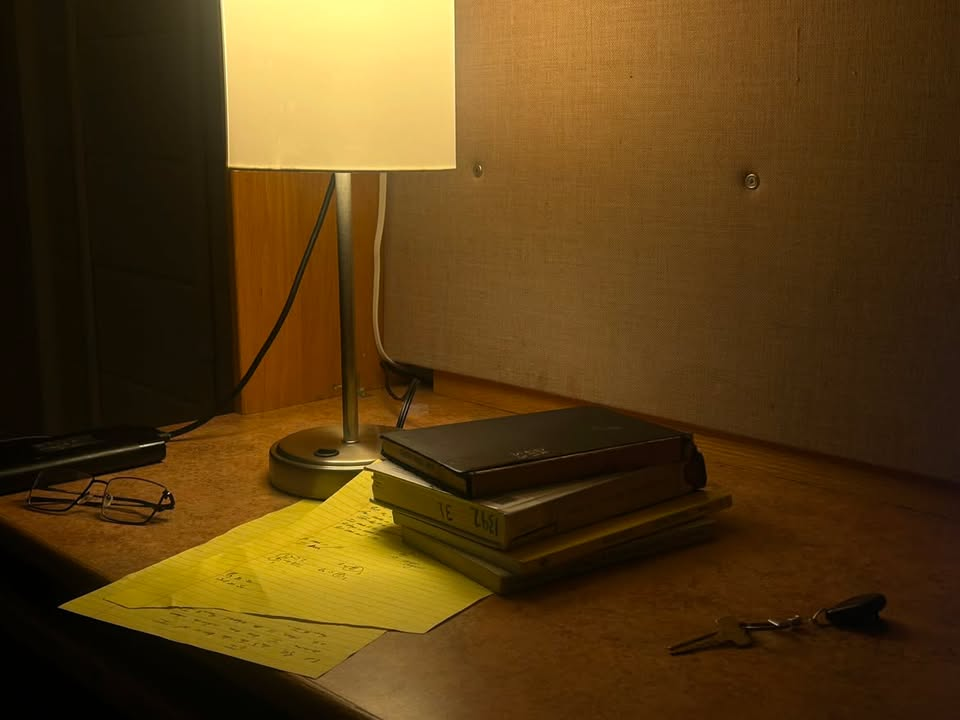
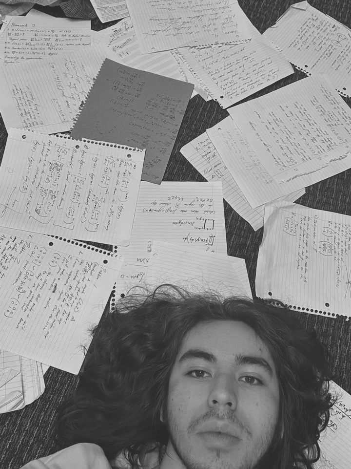
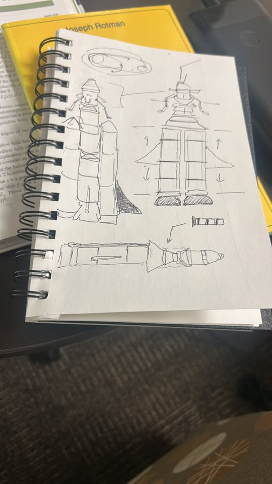

University of Arizona, Honors Composition
"The things you think you're useless I can't understand", the lyrics straight across from Steely Dan's string section, all permeate in the essence of my writing. I write with a passion of alienating from priorities, the stories I told all this semester, they are an exploration of the self and its context through the lens of trivial things: the witty and imaginative. Although the stylistical and content decisons have never been a struggle, there was a deeper culprit in the creative process: the capacity to flourish the human in my writing.
I originally speak Spanish, I learnt to write and read in English from watching Pokemon game tutorials when I was 6 or 7 years old. Coming into this class, I was more sure I knew about the names of videogame fantastic creatures than the one I would write on the title of each project. Follow my story around ENGL109H.
To accompany this portfolio, I decided to add the album that has carried me along all the assignments. Darondo's "Let my people go".

The desk where it all started. Required a dim light because I am prone to headaches.
When I was writing, I wasn't quite sure of who I was. This is not to say "I was lost in this world". The situational array of ways that a person may go about their writing, that was where I didn't know: can I today be the one who talks about a crime from a city I no longer have the agency to presently describe?
To me, the solution, the thing that makes me a writer, is exactly that I am able to close that gap. Looking back to the showcased projects: I was successfully able to criticize my own cognition process and go through large revision and sentence weaving processes that led to a coherent end result. Where I compromised to sacrifice the stillness of research-level description (oftentime shallow against sole creativity) with personal experience and the humility of admitting the lack of information in some places. Instead of saying "hey, here is how the world looks like right now.", I managed to deconstruct down to "this is what the world was, and that which is invisible is the responsibility of us, the ones engaged in the reading and writing process."

The man behind the pen. A student, and human as well.
What makes language so attractive is that I could have very well be speaking exactly the same things I wrote about from under a well, or in a bank heist; where the action-place-person combo would have completely reinterpreted the meaning of the things said. What changes in the pathos for me is that the reader is the one who is now interpreting my words in their own voice. And I like to play with that; my writing isn't ethically perfect nor asking to take effective action of major problems, it's asking for the engagement of criticizing the placement of my own character, and everyone else's in the stories that I write. Such a character is also the one that the reader has built of the narrating voice, and as such, there is a silence call to explore whether the built-in voice in one's head has put together the right interpretation of the written word. That is, the world in my words is simple, but the entire emotional world and depth that I give to it has a basis on the subjectivity, the ways that essays will shock one when an unexpected turn gets braided.
Relatively simple things can create vast emotions and reactions. Such a principle applies to writing.
> The opening of the portfolio showcased a self that is naive to writing, closed to thinking outside of the box with his words, and really shy about making things that weren't what weren't the consumption of ideas which already floated around his head.
> The continuing section of the portfolio is an opening, a minor scale revalation towards engagement with the community and people that saw me grow. It is much more interesting to write about abstract things when their application follows that the problem itself is a real problem.
> The middle of the portfolio showcases a little more creative flexibility, someone who is still attempting to land jabs at language but is excited to experiment with the things at stake on each project.
> The end for me, is writing humility. I wanted to show that I could write something that didn't have a massive, out of the world thesis. Instead, I wanted something that landed and had descriptions that were brutally accurate but imaginative and thoughtful; all of this without saying something that works as a moral patch to the world's problems. Which I believe I achieved.

Writing isn't rocket science, is it?